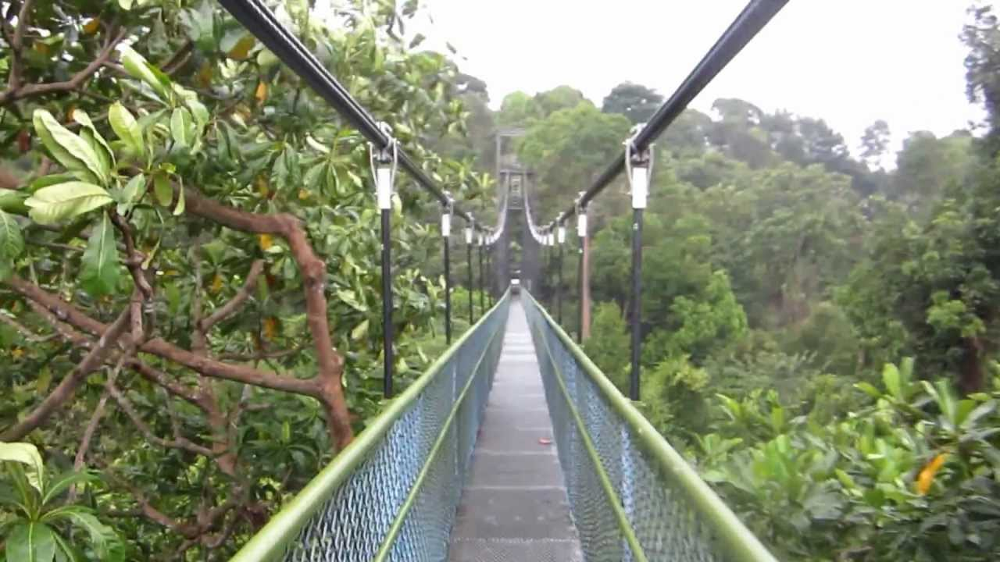

Nature

Garden By the Bay
An indoor forest housing a 35-metre-tall waterfall, Avatar-like Supertrees that twinkle come dusk, and a Flower Dome that holds a 2015 Guinness World Record for world’s largest greenhouse: at the 101-hectare attraction that is Gardens by the Bay, you’ll be dropped into an almost surreal, futuristic expanse of greenery. And it's located just minutes from Marina Bay Sands by foot. We let in on the very things you can’t miss, including artworks in hidden spaces.
 CE1, DT16 :Bayfront
CE1, DT16 :Bayfront  How to get there
How to get there I really enjoyed it.
I really enjoyed it.
 Click here for more photos!
Click here for more photos!